切块 → Embedding 向量化 → 存向量库；图谱方案还要逐段调大模型抽实体。SAG 一代建 11,656 段：4.57 小时、2,826 万 tokens。
分词后直接进 SQLite 全文索引。同样 11,656 段：2.36 秒、25.87 MiB、零模型调用。不用 GPU，不装向量库。
Zleap AI（广州智跃深空）开源的检索架构 SAG2（arXiv:2610.22588）和落地它的桌面应用 SAG Wiki。本文关键数字已对照论文与官方仓库核验；作者实测部分单独标注。
把语义理解从建库阶段挪到提问那一刻：索引只存原文和词表，检索时 BM25 先找候选，JEV 判断哪段真有用，再从有用段落里取词接着搜。
代价是：语义检索和问答并不是离线的——问题与文档片段会发送给你配置的模型服务。本地的是索引与文件，不是所有数据流。
Zleap AI 的开源检索架构 SAG2 + 桌面端 SAG Wiki，MIT 许可。论文 2026-10-15 挂 arXiv，配套基准仓库可复现。
2.36 秒建完 11,656 段索引（vs SAG 一代 4.57 小时、2,826 万 tokens，量级差约 7,000 倍，两次测量条件不同）。
三个多跳测试集各 1,000 题，R@5 和 R@10 全部最高：86.62% / 97.43% / 99.00%；企业基准 51.2 万文档 R@10 81.10%。
快速搜索纯本地可离线；深入检索调 Jev 云服务、问答调回答模型。论文用固定测试集，官方建议在自己的数据上自测。
SAG2 建库阶段不调用任何模型。原文分词后连同词项统计一起写进单个 SQLite 文件（FTS5 全文索引），保留来源、标题与词频。没有 Embedding，没有实体抽取，没有向量库，也没有独立的数据库服务。
文件改动时增量更新索引，原始文件始终留在原处，不搬家也不改写。
提问后，BM25 按词项取最多 100 条候选；JEV 逐段判断"这段是否提供了回答必需的事实"；从高分段落提取词项与完整名称继续检索，新候选结合已有证据重新打分；最后本地做多样性排序，输出带原文位置的 10 条结果。
SAG Wiki 应用默认首次召回 + 1 次扩展（最多 2 轮）；论文实验默认最多扩展 2 次。
JEV 是 TypeSafe AI（创始人 Diogo Almeida，前 OpenAI）2026-09-15 发布的"System One Model"：不生成文本，只对给定问题返回判断和校准过的概率（Noul 接口）。官方定价输入 $0.042/百万 tokens、输出免费，时延 70–500ms。SAG2 论文经 OpenRouter 使用 typesafe/jev-1.13-20260917。
它回答"这段是不是证据"，但不产出最终回答——写答案的是你配置的问答模型。
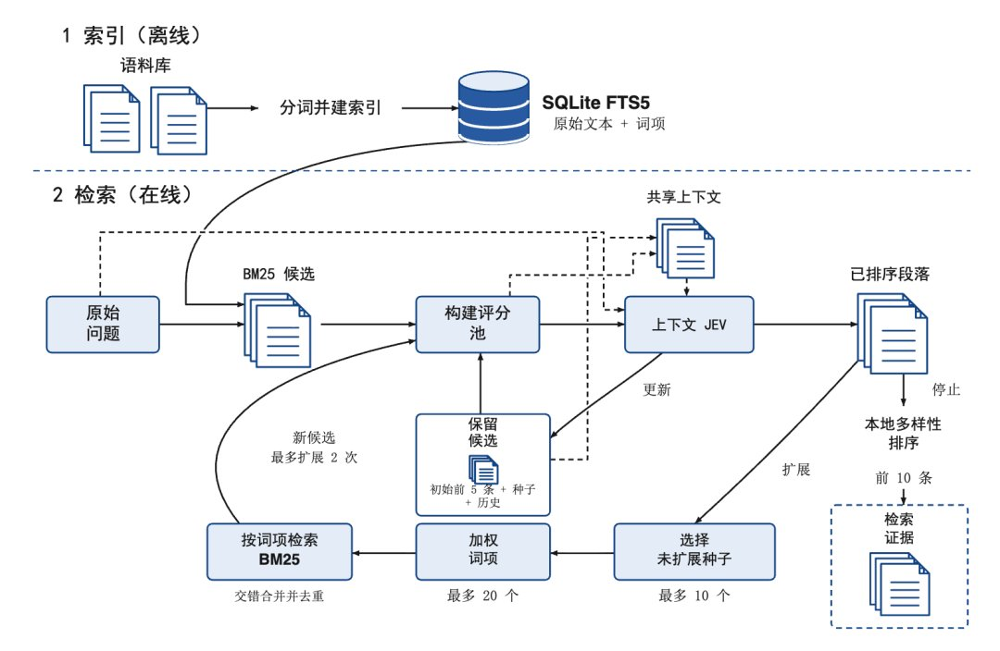
论文在 MuSiQue、2WikiMultiHopQA、HotpotQA 各取 1,000 题评测。原文说"8 项指标全部第一"——对照主表，这个说法要修正：成立的是 R@5 和 R@10 共 6 项全部最高；MuSiQue 的 R@1（36.82 对 34.30）、R@2（63.62 对 62.18）和 2Wiki 的 R@1（43.81 对 43.55）仍由 SAG 一代领先。论文自己的表述也是"R@5 与 R@10 在全部对比方法中最高"。
| 数据集 · 指标 | BM25 | BGE-Large | HippoRAG 2 | SAG 一代 | SAG2 |
|---|---|---|---|---|---|
| MuSiQue R@5 | 47.47 | 56.32 | 65.13 | 80.36 | 80.68 |
| MuSiQue R@10 | 54.41 | 64.08 | 73.76 | 83.37 | 86.62 |
| 2WikiMultiHopQA R@5 | 67.05 | 69.83 | 90.35 | 93.34 | 97.35 |
| 2WikiMultiHopQA R@10 | 71.50 | 73.75 | 93.40 | 93.57 | 97.43 |
| HotpotQA R@5 | 74.40 | 89.20 | 94.35 | 96.50 | 98.45 |
| HotpotQA R@10 | 86.90 | 93.35 | 97.15 | 97.70 | 99.00 |
| MuSiQue R@1 | 28.53 | 29.42 | 30.65 | 36.82 | 34.30 |
| MuSiQue R@2 | 37.32 | 41.68 | 49.52 | 63.62 | 62.18 |
数据来源：SAG2 论文主表（arXiv:2610.22588，各数据集 1,000 题固定子集，R@k 为证据召回率）。棕色为该行最优。后两行是原文"全部第一"说法不成立的三处：SAG 一代仍领先。
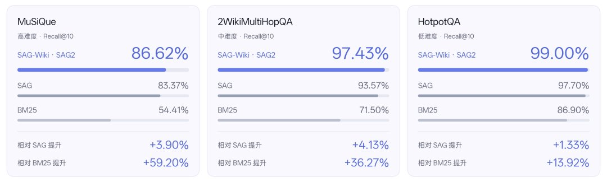
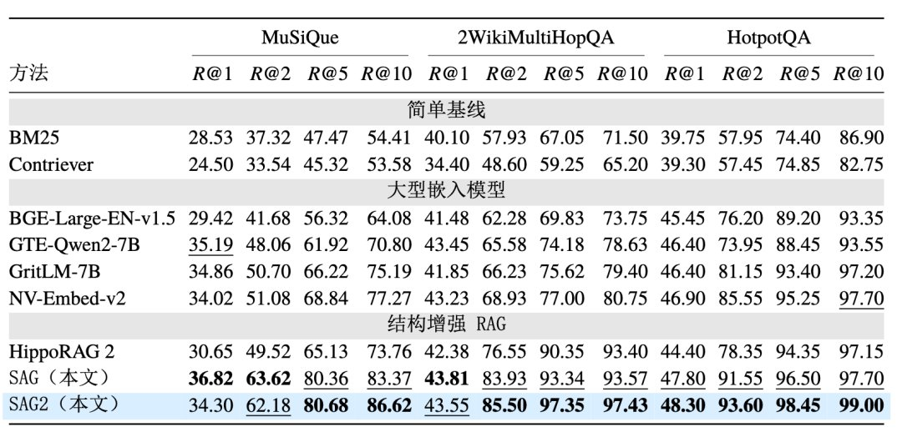
51.2 万份模拟企业邮件、工单与会议记录，470 个标注问题上 SAG2 文档 R@10 为 81.10%（BM25 68.4 / 向量 46.0 / Bash Agent 55.8）。原文提到部分图谱方案没有跑完这个量级；论文的建库数据点是 MuSiQue 的 2.36 秒，企业基准的建库耗时论文未在我们核对的主表中给出。
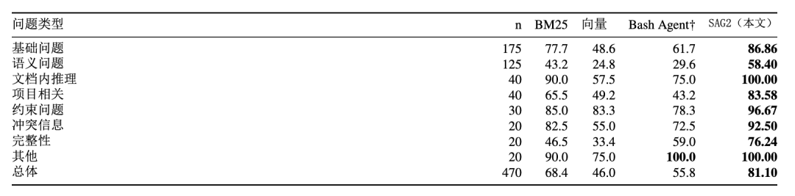
SAG 一代论文（arXiv:2606.15971）Table 8：同样 11,656 段，离线索引 4.57 小时、2,826 万 tokens（逐段调 LLM 抽事件与实体）。SAG2 同规模 2.36 秒、零 token。两者相除约 6,971 倍——原文"7000 倍"是成立的量级，但注意两次测量的硬件与实现不同，只作数量级参考。
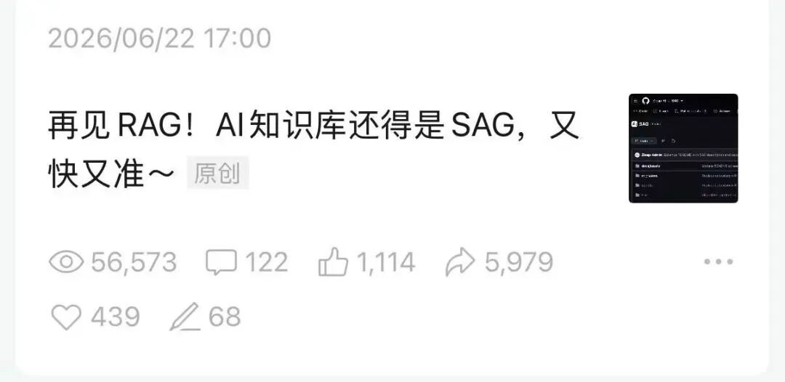
以下结果全部来自原文作者自述，发布时间 2026-11-09，未经我们独立复现；好处是能看出真实使用形态。
问"之前蒸馏公众号文章处理了多少篇、多少字"——两次检索后给出 138 篇、79 万字；追问多模态工具接入案例，从多篇文章拼出 LibTV、拓、Remotion 的对照表，引用可点回原文。
索引 100,461 个文件。让 Claude Code+DeepSeek 只凭两个名字连线：原生组在刘慈欣作品表里"同框"，接 SAG2 的组经林庚（清华物理系出身、著《诗人李白》）两步连上，每步有原文出处。
查"谁独家供应 SK 海力士 HBM3 的 Underfill"：SAG2 组 3 次工具调用命中 Namics 原句，原生组第 11 次才命中；同一份 SAG Wiki v0.2.6 源码查 Jev 的 HTTP 499 重试逻辑，总耗时 144s → 95s。
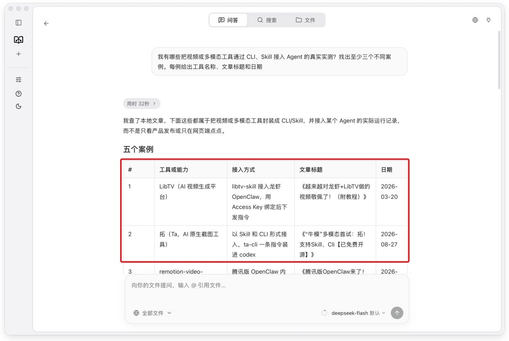
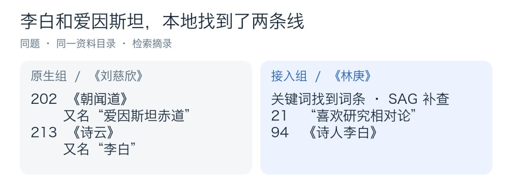
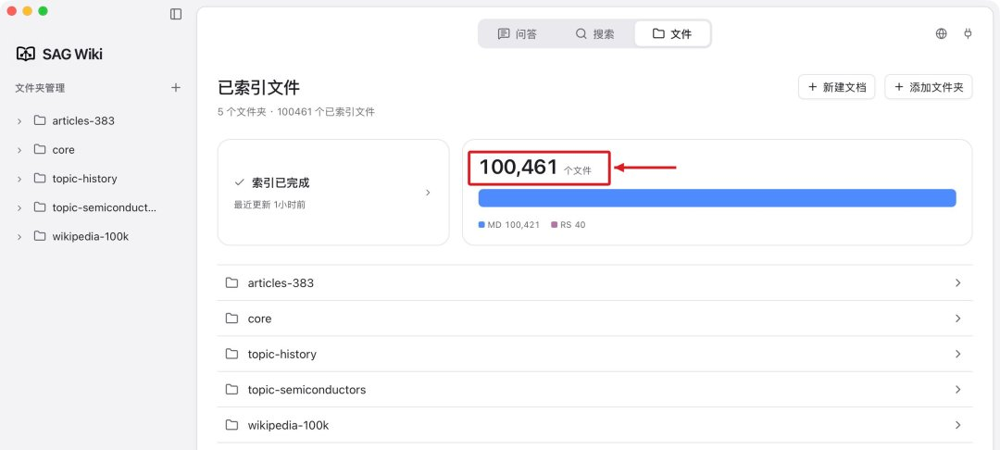
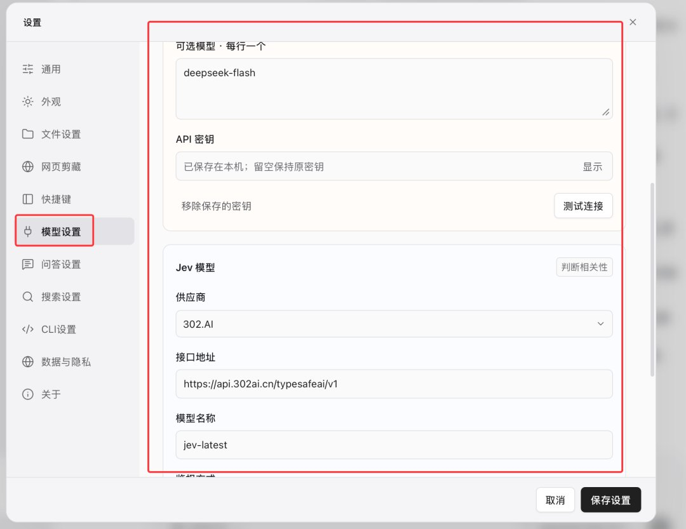
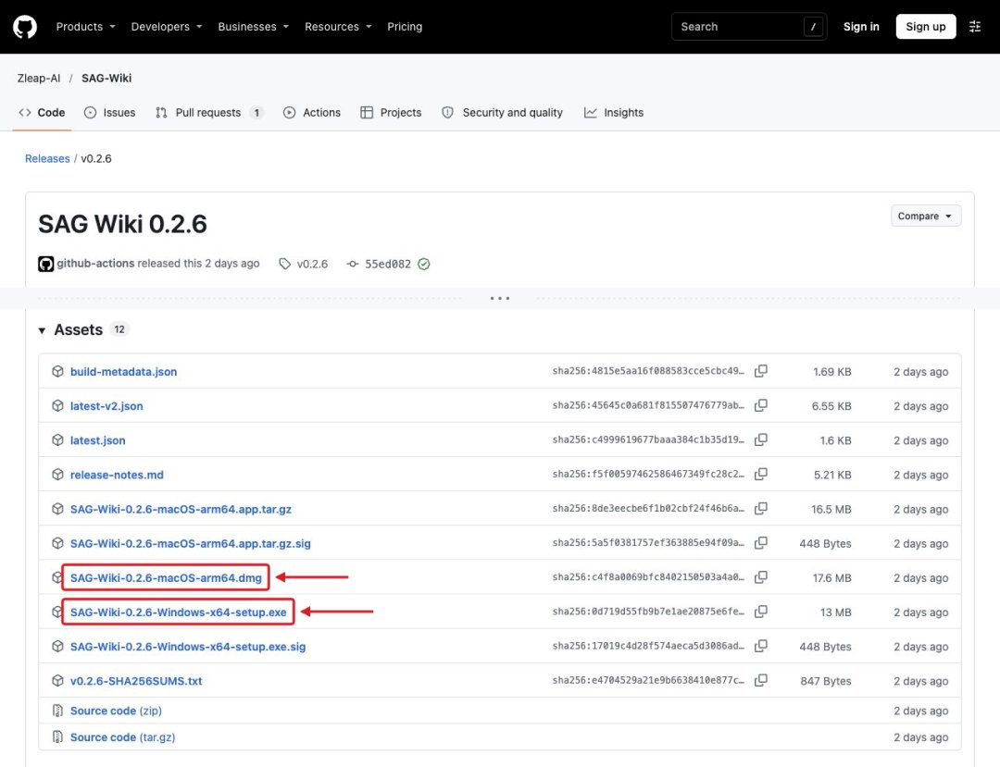
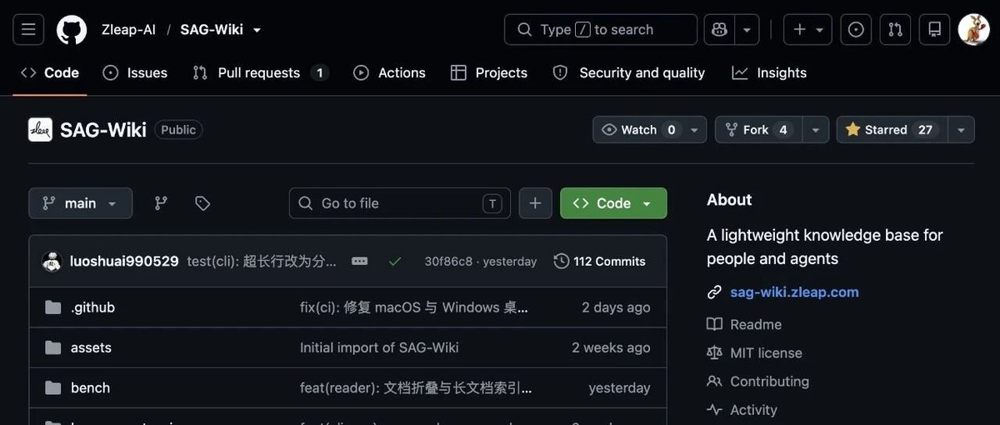
两条提醒：①"本地知识库"说的是索引和文件在本地——只要用语义检索或问答，就有片段离开本机，敏感文档先想清楚再配 Key；②benchmark 来自固定测试集（各 1,000 题子集），论文和官方都建议在自己的文档与硬件上实测召回与速度。另外 R@1/R@2 场景 SAG 一代仍更强，追求"第一条就中"时别只看 R@10。
下一步：想试可以先拿一个不敏感的文件夹（比如公开文档或自己的旧文章）建库，对比快速搜索与深入检索的差异，再决定是否接入生产数据。仓库：SAG-Wiki（桌面端）、SAG-Benchmark（复现）、SAG（一代与引擎），均 MIT。